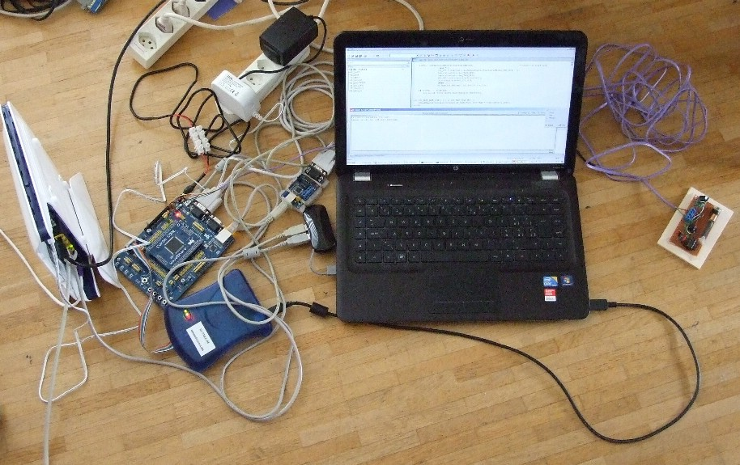

dcfAlways - first step planned
It seems important to find out more in practice how all this correlation algorithm will work. Therefor it looks reasonable, to implement just step 1 first and run a couple of tests with it to verify the analysis concept and get more experience with the algorithm.
Summary
In a first phase, beginning march 2012, step 0-1 correlation was implemented on an evk1100 compatible Board with AT32UC3A0512 MCU and micrium OSII realtime operating system. Therefor I first used AVR32Studio as development tool. Because AVR32Studio contains too many bugs I changed to IAR, which proved to be rather stable, yet lacking many of the usual cross reference and coding assistant tools. After 01-correlation passed it's first tests, I took the decision to evaluate rather more in depth the 32 Bit MCU features than developing further the correlation algorithms. So, I integrated sdram-access (using asf library), USB communication (transferred from asf library into IAR and micrium), and access to the tcp-ip network (using micrium-tcp/ip), as well as UART using pdca (perpheral DMA memory transfer). In August 2012 I took the decision to interrupt this study-project in favor of starting immediately my long time ago planned evaluation of embedded Linux (embedian).
Testing Equipments:

At the left: AVK3A Board with JTAGICE-MkII, RS232 to USB converter and Ethernet-Router. The AVK3A board is connected to the PC via UART, USB and Ethernet. On the right side there is the dcf-receiver with integrated analog to digital signal converter.
Diary:
march 2012:
Since the hardware of ATmega128 and the external memory expansion is not yet available to me, only some work on the software may continue.
april 2012:
while a first avr software to find 01 correlation is ready for testing,.....
I took the decision to develop a solution based onto micrium OSII or OSIII on a 32 bit board compatible with AVR EVK1100. Actually I can easily "pack" above step 1 code into a micrium OS frame of code existing of several micrium OS threads.
It will take some time until the ordered board will arrive, but anyhow, meanwhile I can start with the software ..... :-)
10 May 2012: software is now ready for very first test on HW
23 May 2012: first tests using AVR32Studio/Avr-gcc took place, debugging on EVK1100 (resp. AVK3A from Waveshare) using AVR Dragon for JTAG communication.. Bad luck, Avr32Studio 2.6.0.753 showed a lot of bugs - wrong memory calculation in the linker, all adresses 8 bites too low or too high, off the mark - not finding its own gcc tools again and again - crashes during compile.... After hours and hours of trying, I will no more use AVR32Studio unless someone can give me a baseline that really works.
Suddenly I felt pretty much chaotic, like this young girl eating spaghetti:
On the other hand even so I had to fight against all this, during first debugging, I could see that the Micrium OS II Code in itself probable will work perfectly well and fortunately seems to be real state of the art.
As a consequence , two days ago, I transferred my code into IAR what so far was rather easy. Since IAR IDE does not offer debugging with the use of AVR Dragon, I wait now for the arrival of a JTAGICE-mkII ordered from the US.
25. May 2012: During waiting on the JTAGICE-mkII, with the aid some work-arounds, I did some more debugging tests still using AVR32Studio. Micrium OS II worked perfectly well and also the USART0 print out showed not the least problem.... but AVR32Studios snprintf many times led to unhandled exception, but sometimes it also worked ??
Anyhow, a nice first success :-)
30. May: still using workarounds, I implemented and tested today USART working via DMA (pdca) what allows faster transfer rates needing much less CPU Time (one interrupt per string instead of one interrupt per character).
3. Juni 2012: meanwhile also sdramc integration works, what was rather easy to transfer from asf into micrium OS/II. Now, the fundamental frame for the application works and coding of the actual correlation algorithms may start.
6. June 2012: after jtagice-mkII arrived, it was quite easy to transfer all the changes from AVR32Studio into IAR. IAR behaves rather stable and so far without any internal bugs. Regrettable it lacks some of eclipse's code browsing and cross reference features, but it's stability is more important to me than the presence of all this "nice to have" stuff.
17. June 2012 meanwhile the 0-1-correlation prototype works rather fine and IAR is excellent in stability. I tried to mix c and c++ code, but it didnt work so far. It would be nice to pack data and code further together and to use inheritance. But also I read, that IAR C++ will support exceptions what I miss so much... all the if (err != OS_NO_ERR). As next, scoring and calcControl for the 1-0 correlation step will be further developedc
6. August:: In the last weeks, just for in-depth study, I integrated USB communication into the AT32UC3 application. It was a rather hard job. First I entirely studied the AT32UC3 interface to the USB hardware, then I converted an asf sample for AVR32Studio into IAR and micrium OS. Though it was a lot of work to do, all in all it went rather strait forward. Once the code was converted into IAR, integration into micrium was easy and the communication, from the beginning, run without problems. I used a HID (human interface device ) sample code of asf, what for a customer product one preferably would not do, because we simply don't build a HID application. Anyhow, the sample covers all our needs, was well documented, and even an existing PC-application could be reused with minimal changes, while building own drivers on both sides, plus an own PC-application, would mean much work, while not learning much more about the interface. And finally, exchanging data over the HID sample code can now be perfectly done in both directions.
21 Aug 12: Fortunately, two weeks ago, I found a copy of the source code of micrium's tcp-ip product for at32uc3a0512 on EVK1100 on a chinese internet page. Based on that lucky finding, I could not resist integrating it immediately into my test-application. This was easy to do and as an example I created a micrium tcp-ip server thread within my program. Also I developed a simple console client with the aid of MS VC++ 2008. Both can be found on my git repository.
23. Aug 12: In the last weeks, I concentrated on studiung entirely the 32 bit mcu architecture and integrating a few samples into my test-application. I preferred this rather than continuing with the correlation algorithm, because this was more of a challenge and the concept of the 32 bit mcu's is of top interest..
Moreover I took the decision to leave the project in today's state for a while. Instead of continuing right now, I will start evaluating embedded linux and do some training in this field. I planned to do a small sample project using embedian (based on debian linux).
Software (under construction) available at: https://github.com/kwarahi/dcfAlways-uC
work in progress, more content will follow in future, after the current break (as per 23. Aug 2012)
{kind=link}